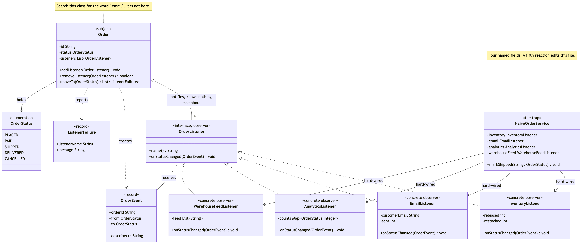

Observer Pattern
Demonstrates the Behavioural Observer design pattern using order status changes in an online shop as an example.
OrderListener— the observer. One interface:name()identifies the listener in a failure report,onStatusChanged(OrderEvent)is the reaction. Deliberately no priority, no ordering hint and no filter predicate, because each of those would let one listener make claims about the others.Order— the subject. Keeps a list of listeners, and announces every real transition to all of them. It has no field named after any of them, and no way to ask which ones are attached.InventoryListener/EmailListener/AnalyticsListener/WarehouseFeedListener— the concrete observers. Releasing stock, emailing the customer, counting the funnel, and writing the pick line. They hold different state, want different events, and know nothing about each other.OrderEvent— the message. A record of the order id, the status it came from and the status it moved to. It carries no reference back to theOrder, so a listener cannot change the subject halfway through a notification.ListenerFailure— what comes back when a listener throws: the listener's name and the message, so an exception raised inside an anonymous list is still attributable.NaiveOrderService/OrderStatus— the trap, kept for contrast. Four calls in a row with nothing between them, so the day the mail server times out the order ships and the warehouse is never told.OrderEventsDemo— runnable entry point that shows the outage, the same failure isolated behind the pattern, and a fifth listener attached withoutOrderbeing touched.
Run
./gradlew runWhich prints:
=== 1. The trap: an order service that calls each system by name ===
Shipping A-1001 through NaiveOrderService, with a broken mail server:
[inventory] released the reservation for A-1001
!! SMTP timeout after 30s
analytics recorded : 0 event(s)
warehouse feed : []
The order shipped. The warehouse was never told.
=== 2. The pattern: the order announces, the listeners decide ===
Order A-1002 starts at Placed with 4 listeners attached.
order.moveTo(PAID)
[email] to grace@example.com: Payment received for A-1002
[analytics] recorded A-1002: Placed -> Paid
[warehouse-feed] wrote "A-1002,PAID"
order.moveTo(SHIPPED)
[inventory] released the reservation for A-1002
[email] to grace@example.com: Your order A-1002 is on its way
[analytics] recorded A-1002: Paid -> Shipped
[warehouse-feed] wrote "A-1002,SHIPPED"
order.moveTo(DELIVERED)
[email] to grace@example.com: Your order A-1002 has arrived
[analytics] recorded A-1002: Shipped -> Delivered
order.moveTo(DELIVERED) <- already there
(no event, so nobody is told twice)
=== 3. A fifth reaction, added without touching Order ===
order.moveTo(DELIVERED) with a listener defined in this file:
[analytics] recorded A-1003: Placed -> Delivered
[loyalty-points] credited 120 points for A-1003
=== 4. One listener throws; the others still run ===
Same broken mail server, this time behind the pattern:
[inventory] released the reservation for A-1004
[analytics] recorded A-1004: Placed -> Shipped
[warehouse-feed] wrote "A-1004,SHIPPED"
failures reported : [email failed: SMTP timeout after 30s]
order status : Shipped
The warehouse was told anyway.
=== 5. What the listeners ended up holding ===
inventory released 1, restocked 0
email sent 3 message(s)
analytics 3 event(s), of which 1 shipment(s)
warehouse-feed [A-1002,PAID, A-1002,SHIPPED]
Four different tallies from one sequence of transitions,
and Order knows about none of them.Sections 1 and 4 use the same broken mail server. The difference between them is the whole project.
Test
./gradlew test27 tests across 3 classes. OrderTest covers the subject in three @Nested groups — notification, subscription, and failure isolation — including that an unchanged status announces nothing, that the status is updated before the listeners run, and that a listener can remove itself while being notified. OrderListenerTest tests the four listeners on their own, in four @Nested groups, and never mentions Order at all — which is itself the point. NaiveOrderServiceTest holds the comparison: the same broken listener takes the naive service down and is contained by the pattern, and a listener defined entirely inside the test works unchanged against Order.
Learning Material
Start here if you are new to the pattern — the docs are ordered as a learning path.
| Document | What it covers |
|---|---|
docs/prerequisites.md | What to know and install before you start |
docs/problem-statement.md | The problem the pattern solves, and why the naive approach hurts |
docs/observer-pattern-explained.md | The pattern itself, the code walked through, pitfalls, and comparisons |
docs/class-diagram.md | Static structure |
docs/uml-diagram.md | Runtime call flow |
docs/animation.html | Animated, step-by-step walkthrough — open in a browser. Optional narration via the Narration button |
docs/session.md | A 60-minute guided session plan for teaching it |
docs/youtube.md | Title, description, chapters and thumbnail for publishing the video |
docs/thumbnail.png | The 1280×720 image to upload as the YouTube thumbnail |
docs/spec.md | The project specification — problem, code, video and publishing quality bar. Also as spec.html |
video/ | A narrated video, plus the script and build pipeline |

The pattern in one picture

Video
video/observer-pattern-explained.mp4 — 1080p, narrated. An audio-only version is alongside it. See video/README.md to rebuild or re-record it.
Also available with a framework
Observer with Spring Pattern reruns this idea on a real framework, and shows what the framework adds and where it can undo the pattern. Watch this project first.